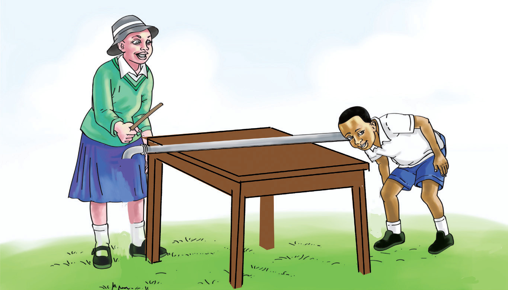

Kielelezo namba 2 kinaonesha wanafunzi wakiwasiliana kwa kutumia simu ya kamba. Mwanafunzi mmoja akiongea, mwingine atasikia kupitia spika iliyounganishwa kwa kamba. Hivyo, inaonesha kuwa sauti husafiri katika kamba.
Chunguza Kielelezo namba 3, kisha fanya Kazi namba 3.

Kielelezo namba 3: Kusafiri kwa sauti kwenye chuma